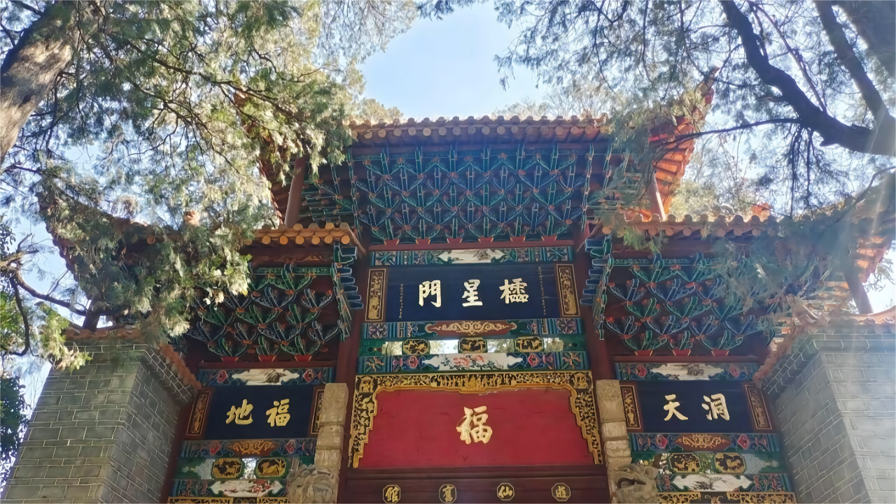
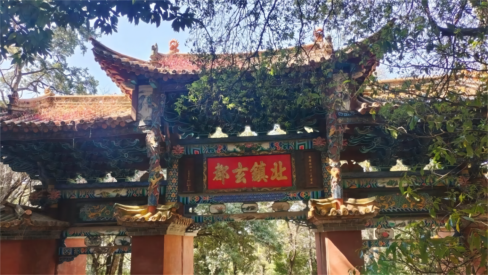
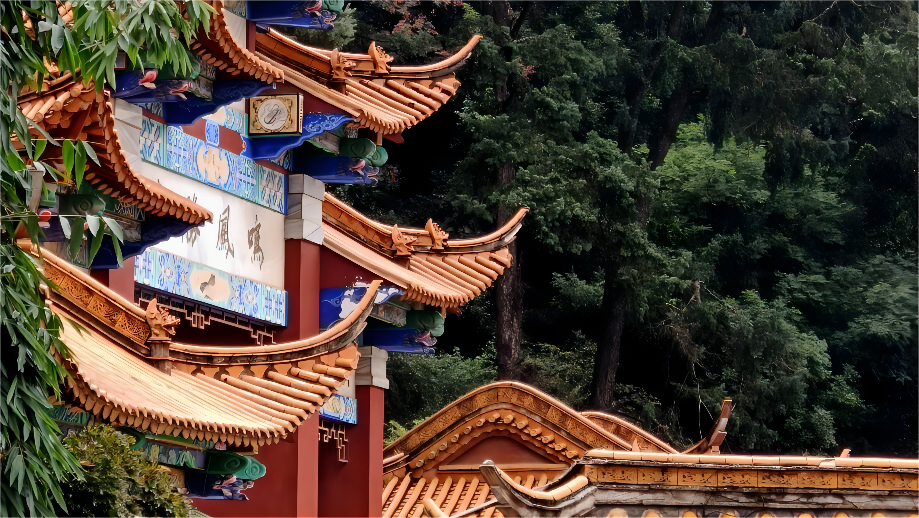
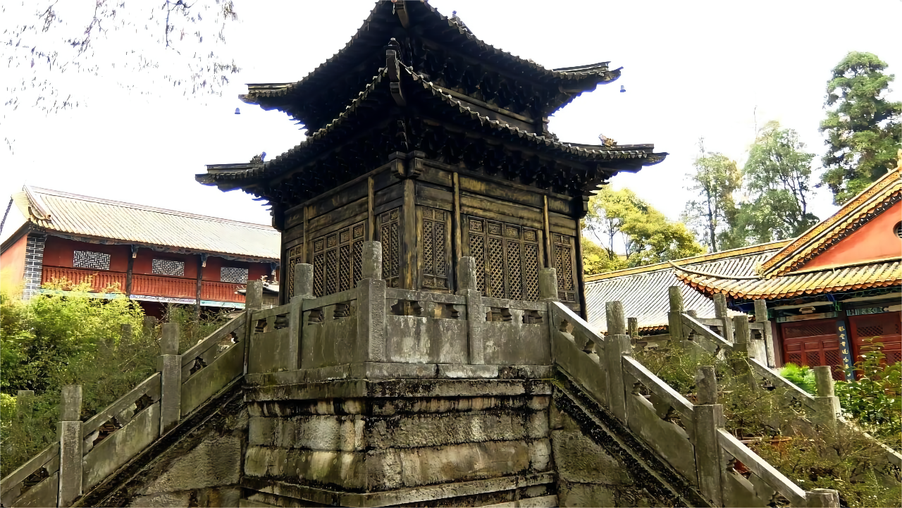

云南大学
为4A级风景区的金殿景色优美自不必多说，园内上百年的苍天古树，遮天蔽日，将夏天的烈阳隔绝在外，只留一片清凉。
金殿，即真武殿，位处昆明东郊，是中国四大铜殿之一。金殿由黄铜铸成，在阳光的照耀下，光芒四射，熠熠生辉，映得一旁翠谷幽山金光灿烂，因此而得名金殿。巍峨的大殿，重檐殿阁、气势非凡、明亮耀眼。殿旁悬挂有铜制七星旗，将金殿点缀得更加古朴庄重。
园内东南方有一座“明钟楼”。楼有三层，飞檐翘角，宛若一直振翅欲飞的鸣凤。在顶层悬有一口大铜钟，铜钟硕大，高约30米，距今已近600年的历史。每当新年敲响这座巨大古老的铜钟，深远的钟声透过琉璃宝顶在山谷间回荡，久久不会停息。
作为4A级风景区的金殿景色优美自不必多说，园内上百年的苍天古树，遮天蔽日，将夏天的烈阳隔绝在外，只留一片清凉。在园中找一处农家乐，寻一方小谭“泊舟钓台下，垂竿弄清风。”欣赏夏日金殿的山山水水，享受悠然自得的山系生活。
云南大学地球科学学院@2021~2022